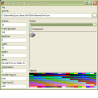
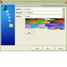

CD Track Listing Using freedb.org
CD Track Listing Using freedb.org
 Reading and Writing MP3 ID3v1 and ID3v2 Tags
Reading and Writing MP3 ID3v1 and ID3v2 Tags
 Transparent GDI Sprite Library
Transparent GDI Sprite Library

Movies Index
|  | AVI Frame ExtractorThe AVI Frame Extractor code provided here allows you to extract and display individual frames from AVIs. This can be useful if you're trying to create a derivative of an existing AVI as you can extract each of the frames and either edit them in a painting package or write a program to do it. There's also some code in there to save a 256 colour bitmap using Run-Length Encoding. Last Updated: 23 November 2003 |
|  | AVI CreationOne thing that's always been tricky with AVIs is the lack of suitable software to create them. This article provides VB classes allowing 8-bit and 24-bit AVIs to be created, using any available Codec on the system. The demonstration project uses these classes to provide a pretty comprehensive programmer's AVI creation utility. Last Updated: 23 November 2003 |